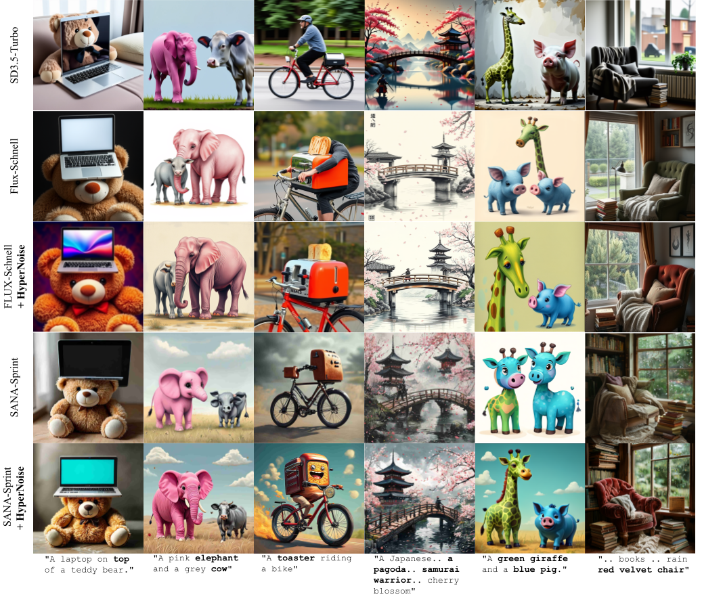
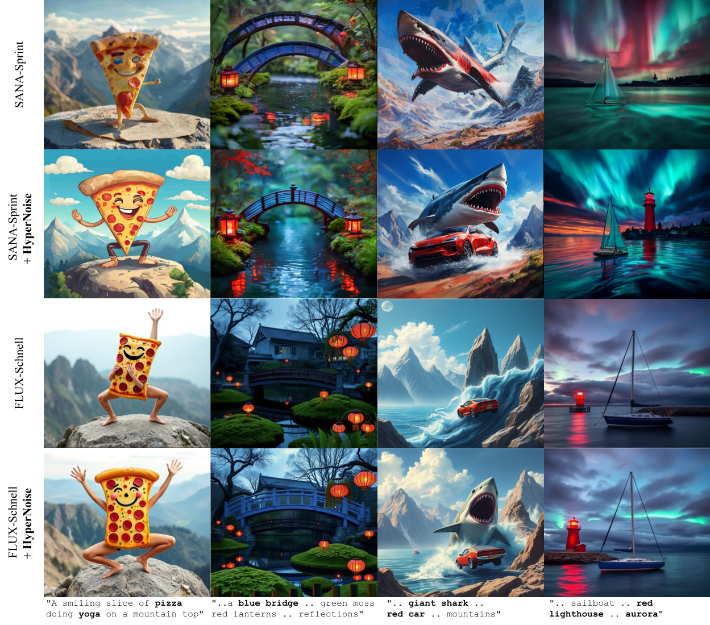
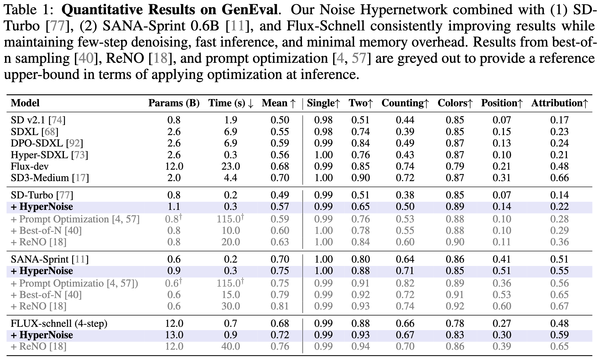
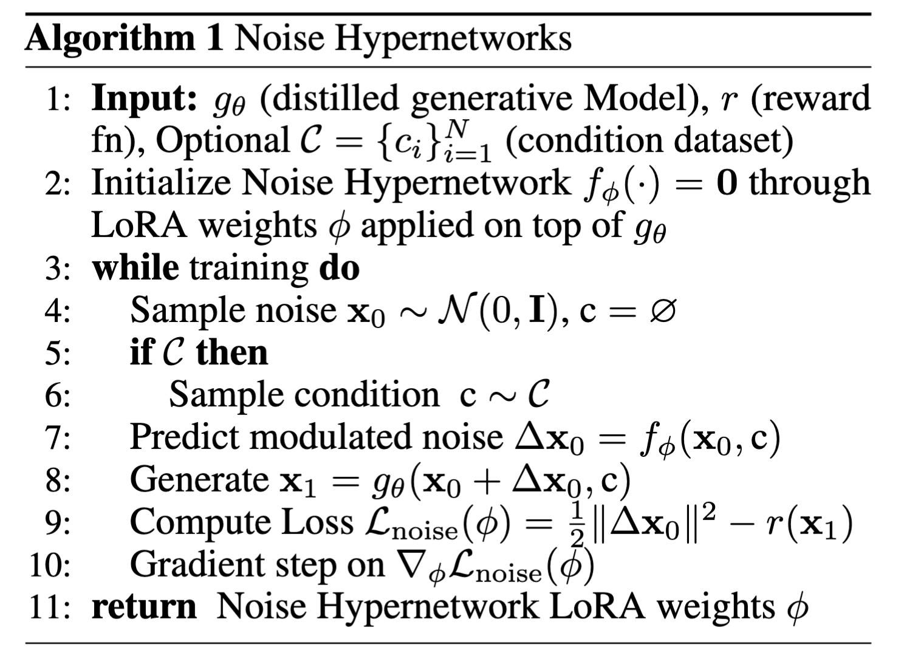
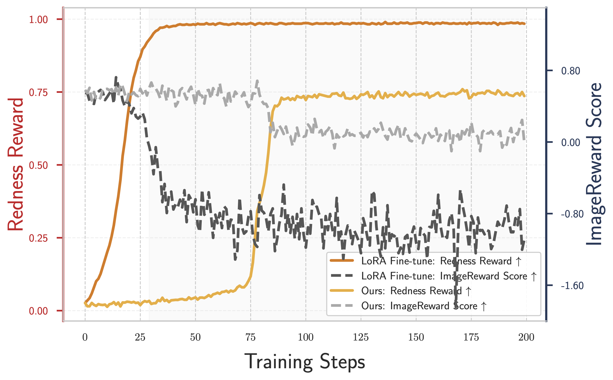
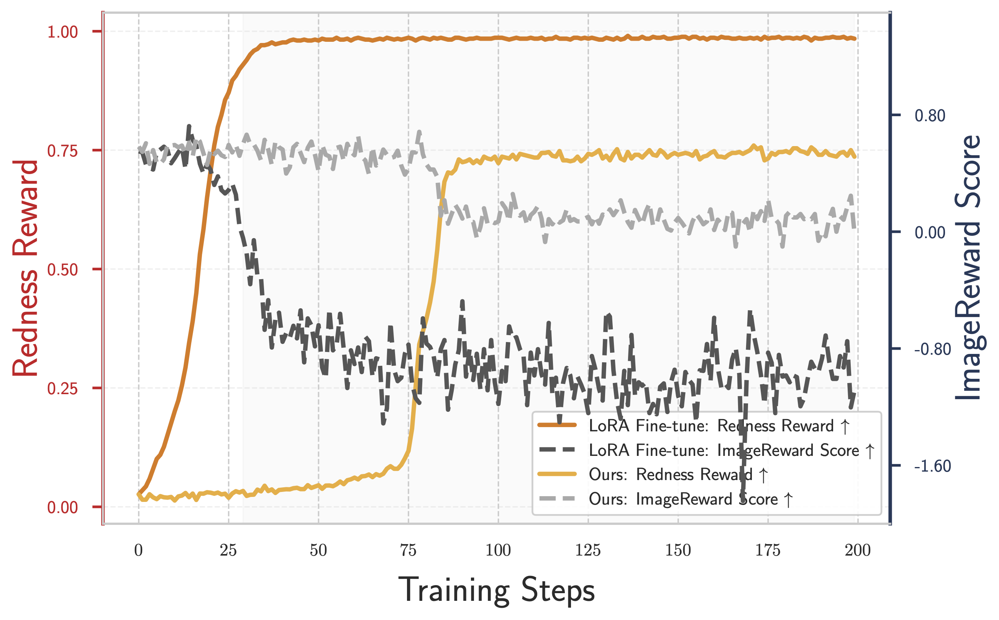

Comparison with other methods



Algorithm

Redness reward
HyperNoise is able to learn the reward-tilted distribution whereby the generated images are more red, while still staying within the natural distribution of images. In contrast, direct reward fine-tuning ends up trivially overfitting to the reward while worsening the quality of the generated images.
 
